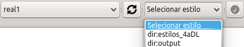

Esta ferramenta é útil para alterar os estilos que estão em uso em um dado banco de dados. Funciona de maneira simples e pode ser inicialmente acessada por meio do botão . Ao clicar no botão será possível ver o seguinte:
Ao clicar no botão será possível ver o seguintes botões:
Inicialmente o usuário deve selecionar o banco de dados no qual deseja gerenciar estilos por meio do botão Selecione o Banco de Dados. Caso seja necessário, é possível atualizar a lista de bancos por meio do botão . Após a seleção do banco estar concluída resta selecionar o estilo desejado ao se clicar no botão Selecionar estilo. Isto pode ser visto na figura seguinte.

Posteriormente, para finalizar, basta clicar em para atualizar a renderização dos novos estilos no QGIS.